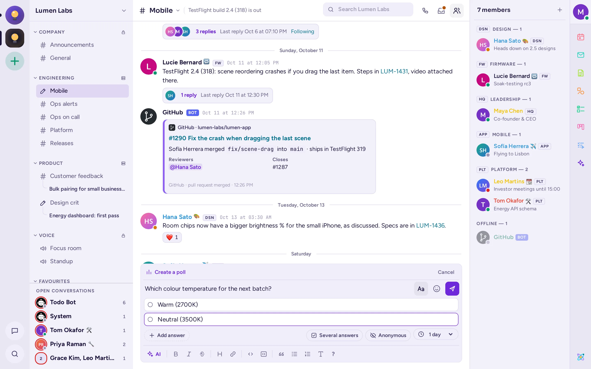

Les aplicacions
Antimatter inclou aplicacions que funcionen al costat del xat: notes i pissarres que editeu junts, taulers kanban, el vostre calendari i correu, enquestes, llistes de tasques pendents i més. A continuació es detalla com obrir cadascuna i per a què serveix.
Trobar i obrir les aplicacions
L'administrador tria quines aplicacions té el servidor, així que pot ser que no vegis totes les que s'esmenten en aquesta pàgina. La majoria d'aplicacions tenen una icona a la barra d'aplicacions, la columna estreta situada a la vora dreta de la finestra, sota la teva imatge. Passa el cursor per sobre d'una icona per veure el nom de l'aplicació i fes clic-hi per obrir-la en un panell al costat de la conversa. Torna a fer-hi clic per tancar el panell. La capçalera del panell mostra la icona i el nom de l'aplicació, i després els seus botons. Arrossega la vora del panell per fer-lo més ample; Restaura la mida del panell el torna a la mida original. Obre en una finestra nova obre l'aplicació en una finestra pròpia, a la nota, tauler o llista que tenies oberta, i Tanca tanca el panell. Els controls propis de l'aplicació, com el títol d'una nota o els botons d'un tauler, es troben en una fila a la part superior del panell, sota la seva capçalera.

Les aplicacions també apareixen en altres llocs:
- El menú + de la caixa de missatges (Afegeix un fitxer i altres elements), per exemple Crea una enquesta.
- Les pestanyes del selector d'emojis: GIFs, Adhesius i Memes.
- El menú d’un missatge (Accions del missatge, el ⋯), sota Més accions, per exemple Afegeix a tasques pendents o Executa guia d’actuació. Cada acció mostra la icona de la seva aplicació.
- Comandes amb barra, com ara
/pollo/todo: escriu/per veure la llista. - La configuració d’algunes aplicacions es troba a Connectors a la teva configuració.
En un telèfon, la barra d'aplicacions es troba en un calaix a la dreta: desllisceu cap a l'esquerra, o trieu Més › Membres i aplicacions a la capçalera de la conversa.
Notes
Les notes són documents que diverses persones editen al mateix temps, al costat del xat. Veieu els cursor i els noms dels altres mentre escriuen, i tot es desa a mesura que avanceu.

Escriu una nota
- Feu clic a Notes a la barra d'aplicacions.
- Trieu una pestanya: Aquest canal per a una nota que tots els membres del canal poden llegir i editar, o Meves per a una nota personal que només podeu veure vosaltres.
- Fes clic a + (Nova nota en aquest canal o Nova nota personal), a la dreta de la fila sota les pestanyes ("Compartida amb #canal" o "Notes personals"). S'obre una "Nota sense títol".
- Escriu el títol a la fila superior de la nota i després redacta el contingut. La barra de Format sota aquesta fila, visible per a qui pot editar la nota, inclou negreta, cursiva, ratllat, encapçalaments, llistes i llistes de verificació; també funcionen els enllaços, les cites i el codi. Al costat, uns punts indiquen qui més està editant la nota i si els teus canvis s'han desat. Escriu
@per mencionar un membre del canal (les mencions en notes no notifiquen ningú). - Fes clic a Totes les notes (la fletxa a l'esquerra de la fila de la nota) per tornar a la llista.
Quan una nota d'un canal rep un títol, Antimatter publica «S'ha compartit una nota» al canal, amb un botó Obre la nota.
Més informació sobre una nota
Pon una estrella a una nota per trobar-la a la pestanya Preferits. El menú Accions de la nota de la nota (⋯) ofereix Comparteix al canal (publica una targeta amb un enllaç), Comparteix a ~canal (converteix una nota personal en una nota del canal, de manera permanent), Historial de versions (ves i Restaura aquesta versió), Exporta com a Markdown i Suprimeix. Només el creador de la nota i els administradors del canal poden suprimir una nota del canal.
Pissarra
Una pissarra és un llençol on dibuixeu junts: formes, fletxes, text i dibuix lliure, amb els punterers de tothom mostrats en directe.

- Fes clic a Pissarra a la barra d'aplicacions.
- Com amb les notes, tria Aquest canal o Meves i fes clic a + (Nova pissarra en aquest canal o Nova pissarra personal).
- Dibuixa amb les eines: Selecciona i mou (V), Mou-te (H), Rectangle (R), El·lipse (O), Fletxa (A), Dibuixa (P), Text (T) i Goma (E). Tria els colors, els estils de línia i les tipografies a la barra d'eines, i les formes a la Biblioteca. Desfés (Ctrl+Z) desfa l'últim canvi.
El menú Accions de la pissarra inclou Pantalla completa, Mostra tota la pissarra, descàrrega com a .excalidraw, PNG o SVG, Historial de versions, Importa un fitxer .excalidraw… (reemplaça la pissarra per a tothom), compartir al canal i Suprimeix. Les pissarres es mantenen al teu servidor d'Antimatter.
Kanban
Els taulers Kanban organitzen el treball com a targetes en columnes, com ara «Per fer», «En curs» i «Fet». Un tauler també es pot mostrar com a taula, galeria o calendari.

Obre els taulers d'un canal
Fes clic a Kanban a la barra d'aplicacions. Kanban s'obre al seu panell, al costat de la conversa, i llista els taulers del canal (Taulers en aquest canal); fes clic a un d'ells per obrir-lo. Si encara no n'hi ha cap, fes clic a Afegeix taulers a… i després a Afegeix al costat d'un tauler, o bé a Crea un tauler. Els membres del canal es converteixen en editors d'un tauler afegit a aquest. Un tauler amplia el panell mentre es mostra; la fletxa d'atras a la part superior del panell retorna a la vista anterior.
Treballa amb un tauler
- Per veure tots els taulers de la comunitat, per categoria, fes clic a Tots els taulers (un botó amb icona a la part superior del panell). Allà pots trobar un tauler, crear-ne un de nou o crear una categoria, i moure, duplicar, exportar, ocultar o eliminar un tauler des del seu menú.
- Per crear un tauler, fes clic a Nou tauler, al costat, i comença des d'una plantilla (agenda de reunió, tasques de projecte, full de ruta, planificador de sprints i altres) o bé fes clic a Crea un tauler buit.
- Fes clic a + Nou en una columna per afegir una targeta. Una targeta s'obre sobre el panell: defineix-ne les propietats, afegeix text, caselles de verificació i imatges, adjunta fitxers i comenta. Si menciones algú en una targeta, se n'adonarà.
- Arrossega les targetes entre columnes. Utilitza Grup per, Filtre, Ordena i Cerca targetes per trobar el que busques, i Afegeix vista per veure-ho en taula, galeria o calendari.
- Utilitza Comparteix en un tauler per triar qui pot veure'l o editar-lo.
Calendari
L'aplicació Calendari mostra el teu calendari al costat del xat, t'envia recordatoris i et permet trobar-te a Antimatter. Funciona amb servidors de calendari que utilitzen CalDAV, com Nextcloud, Fastmail o Radicale.
Connecta el teu calendari
- Fes clic a Calendari a la barra d'aplicacions.
- A Connecta el teu calendari, omple l'adreça del servidor CalDAV (sovint només el domini del teu proveïdor), el teu Nom d’usuari i la teva Contrasenya. Si el teu proveïdor ofereix contrasenyes d'aplicació, utilitza'n una.
- Tria quan vols que et Recordi els esdeveniments sense alarmes i després fes clic a Connecta.
La teva contrasenya s'emmagatzema xifrada al servidor d'Antimatter. Per canviar aquests detalls més endavant o per desconnectar-te, utilitza Configuració del compte al panell.
Utilitza'l
- Canvia entre Agenda i Semana, mou-te amb Anterior, Avui i Següent, i fes clic a la pastilla d'un calendari per mostrar-lo o amagar-lo.
- Fes clic a Nou esdeveniment, omple el Títol, l'Inici i el Final, i opcionalment la Repetició, el Recordatori, el Lloc i la Descripció, i després Desa. Fes clic a un esdeveniment per canviar-lo o eliminar-lo.
- Per reunir-te a Antimatter, establix Reuneix-te a Antimatter en un canal o canal de veu, o en una trucada, i tria el Canal. Quan arribi l'hora, l'esdeveniment mostrarà Inicia una trucada, Uneix-te a la trucada o Uneix-te.
- Els recordatoris arriben com a missatges directes del bot de Calendari, amb un enllaç per unir-te a la trucada si n'hi ha.
L'aplicació mostra els teus propis calendaris; no envia invitacions a altres persones.
Correu
L'aplicació Correu mostra la teva bústia al costat del xat, de manera que pots llegir, respondre i compartir correus sense sortir d'Antimatter.
Connecta la teva bústia
- Fes clic a Correu a la barra d'aplicacions.
- Si el teu administrador l'ha configurat, fes clic a Inicia sessió amb Google o Inicia sessió amb Microsoft. En cas contrari, o per a un altre proveïdor, omple el teu Adreça de correu electrònic i el El teu nom, després els servidors de Correu entrant (IMAP) i Correu sortint (SMTP), amb la seva seguretat, port, nom d'usuari i contrasenya. Les pàgines d'ajuda del teu proveïdor et donen aquests detalls.
- Fes clic a Connecta.
Utilitza'l
- Tria una Carpeta, busca amb Busca en aquesta carpeta i fes clic a un missatge per llegir-lo. Les imatges de la xarxa s'amaguen fins que fas clic a Mostra imatges.
- Respon amb Respon, Respon a tothom o Endavant, o escriu amb Missatge nou. Els missatges són text pla i no pots adjuntar fitxers nous.
- Fes clic a Comparteix en un canal per publicar el remitent, l'assumpte i un extracte d'un correu en un canal, amb un comentari.
Enquestes
Una enquesta fa una pregunta en una conversa i tothom vota amb un sol clic. Els resultats s'actualitzen en directe.
- Fes clic al + del quadre de missatges i tria Crea una enquesta, o bé escriu
/poll. El quadre de missatges es converteix en una enquesta, amb una barra Crea una enquesta a sobre. - Escriu la pregunta al quadre de missatges ("Què hauríem de decidir?").
- Escriu les respostes a sota, de dues a deu: Enter passa a la següent, i Backspace en una resposta buida l'elimina. Afegeix una resposta també en afegeix una.
- A la fila sota les respostes, activa Diverses respostes si la gent pot triar-ne més d'una, i Anònim si ningú no ha de veure qui ha votat què, i tria la durada: d'1 hora a 1 setmana, o Sense final.
- Fes clic a Publica l'enquesta. Cancel·la, a la barra, o Esc, torna a un missatge normal i conserva el text.
A la interfície clàssica, les mateixes opcions es troben en un diàleg.
Per votar, fes clic a una resposta; fes-hi clic de nou per retirar el teu vot. L'enquesta acaba al final de la seva durada, o quan el seu creador o un administrador del canal fa clic a Tanca enquesta; llavors mostra els Resultats finals.
També pots escriure una enquesta sencera en una línia: /poll "Lunch?" "Pizza" "Sushi" --multi --duration 1h. Escriu /poll help per veure totes les opcions.

Tasques pendents
Todo manté les llistes de tasques pendents: llistes compartides en un canal o una conversa, les teves pròpies llistes i les tasques que envies a altres persones. Fes clic a Todo a la barra de l'aplicació. Com a Notes, el panell té tres pestanyes:
- Aquest canal (o Aquesta conversa): les llistes compartides amb tothom que hi sigui. Fes clic a + (Nova llista en aquest canal), a la dreta de la fila "Compartida amb #canal" sota les pestanyes, per crear-ne una: el camp del nom s'obre sota aquesta fila.
- Preferits: les llistes que has marcat amb una estrella, on sigui que estiguin.
- Meves: les teves llistes personals, que només tu veus (Les meves tasques pendents hi és sempre; + en crea una altra), després Assignades a tu en canals, Enviades a tu i Enviades per tu.
Obre una llista per afegir tasques pendents, amb detalls i una Data de venciment si vols, i marca-les com a fetes amb Marca com a fet. En una llista d'un canal, Assigna a… dona una tasca a un membre; en una llista personal, Envia a… l'envia a algú, que pot Acceptar, Rebutjar o Marcar com a fet. El menú Accions de la llista de la llista la reanomena, canvia la seva icona, l'arxiva (passa a ser només lectura, sota Arxivat) o la suprimeix. Qualsevol persona que pugui publicar en un canal pot modificar-ne les llistes; el creador de la llista i els administradors del canal poden suprimir-la.
Per convertir un missatge en una tasca, tria Més accions › Afegeix a tasques pendents al seu menú i selecciona la llista. El bot de tasques pendents t'informa quan algú t'assigna o t'envia una tasca i et recorda les teves tasques un cop al dia.
També funcionen les comandes: /todo lists, /todo new name (afegeix --personal per a una llista pròpia), /todo add list: text per afegir-hi per nom de la llista, /todo add text per afegir-ho a les teves tasques pendents i /todo send @someone text.
GIF, adhesius i memes
Fes clic a Emoji (la cara somrient) a la caixa de missatges: quan aquestes aplicacions estiguin configurades, el selector tindrà les pestanyes GIF, Adhesius i Memes al costat de Emoji.
- GIF: busca o consulta Preferits, Utilitzats recentment, Tendència i les categories. Fes clic en un GIF per enviar-lo de seguida. Fes clic a la seva estrella per afegir-lo als teus preferits. També pots escriure
/gifi unes quantes paraules. - Adhesius: fes una cerca o explora els paquets d'adhesius i fes clic en un adhesiu per enviar-lo.
/stickertambé funciona. - Memes: tria una plantilla, omple els seus textos a Crea un meme, mira la vista prèvia i fes clic a Publica el meme. També pots escriure
/meme, o/meme helpper veure com n'escriure un en una línia.
Segons la configuració del teu servidor, potser podràs afegir els teus propis GIF, adhesius o plantilles de mems amb el + al costat de la caixa de cerca. Obre un formulari dins del selector: tria, arrossega o enganxa un fitxer, comprova la vista prèvia, dona-li un títol (un nom per a una plantilla de mem) i, si vols, etiquetes o paraules clau, i després fes clic a Afegeix (Desa la plantilla per a una plantilla de mem). El que afegis apareix primer al selector i tothom del servidor el pot trobar. El botó al costat del + (Gestiona els GIF, Gestiona els adhesius o Plantilles de mem personalitzades) llista el que la gent ha afegit, amb qui i quan, i et permet eliminar el que estàs autoritzat a fer. Els invitats no poden afegir ni eliminar res.
Guies d'actuació
Una guia d'actuació és una llista de verificació reutilitzable per a feines que segueixen els mateixos passos cada vegada: un incident, una publicació, l'acollida d'un nou company. Cada vegada que l'uses, comences una execució, amb les seves pròpies tasques, responsables, actualitzacions d'estat i, al final, una retroactiva.

- Fes clic a Guies d'actuació a la barra d'aplicacions per veure les execucions del canal actual, comença'n una amb Executa una guia d'actuació o crea una Nova llista de verificació ràpida. Tot el que hi ha a les guies d'actuació s'obre en aquest panell, amb una fletxa enrere per tornar a la vista anterior.
- Per trobar-ho tot el restant, fes clic a Consulta execucions, guies d'actuació i tasques a la part superior del panell: Totes les execucions, Totes les guies d'actuació, Les teves tasques i els teus preferits i execucions en curs.
- Per crear una guia d'actuació, fes clic a Crea una guia d'actuació o Importa en aquesta vista; per editar-ne una, obre-la des de Totes les guies d'actuació. Comença des d'una plantilla, com ara llançament de producte, resolució d'incidències o incorporació de treballadors, o des d'una guia d'actuació en blanc. L'editor de guies d'actuació amplia el panell mentre s'hi mostra.
- Per començar una execució, fes clic a Execució en una guia d'actuació, dona un nom i un resum a l'execució, tria si vols crear un canal per a ella o enllaçar-lo a un canal existent i fes clic a Inicia l'execució. També pots triar Més accions › Executa la guia d'actuació al menú d'un missatge.
- Durant una execució, marca les tasques com a fetes, assigna-les i dona-les dates de venciment, i fes clic a Publica l'actualització per dir a tothom com van les coses. El responsable fa clic a Finalitza al final.
Escriu /playbook per veure les comandes, com ara /playbook run o /playbook update.
GitHub, GitLab i Jira
Aquestes aplicacions connecten Antimatter amb les eines que utilitzen els desenvolupadors. El teu administrador primer ha de configurar-les. Llavors:
- Connecta el teu compte escrivint
/github connect,/gitlab connecto/jira connecti, a continuació, segueix el enllaç i inicia sessió al lloc web. En el cas de GitLab, fes-ho des d'un navegador web, no des de l'aplicació d'escriptori. - Després, rebràs missatges directes quan algú et mencioni, et demani una revisió o t'assigni alguna tasca.
- Perquè un canal segueixi un repositori o un projecte, utilitza
/github subscriptions add owner/repo,/gitlab subscriptions add group/projecto/jira subscribe. - Per crear o adjuntar un problema des d'un missatge, tria Crea un problema de GitHub, Crea un problema de GitLab, Crea un problema de Jira o l'element corresponent Adjunta a … a la secció Més accions del menú del missatge.
Escriu /github help, /gitlab help o /jira help per veure totes les seves comandes.
Aplicacions a l'aplicació mòbil
L'aplicació mòbil pot crear i votar enquestes, enviar GIF i pegatines i respondre tasques enviades. Les notes i les pissarres s'obren en una finestra del navegador dins de l'aplicació. Els taulers Kanban, el calendari, el correu i els memes encara no estan disponibles a l'aplicació mòbil: utilitza l'aplicació web o d'escriptori per a ells.